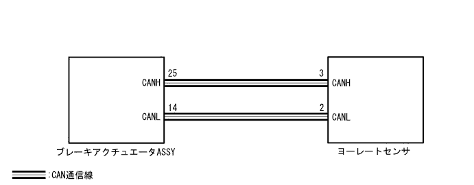

DTC P1585/C1 Acceleration Sensor Circuit |
| DTC No. | DTC Detection Conditions 1. Diagnosis conditions 2. Malfunction status 3. Malfunction duration 4. Other | Inspection Area |
|---|---|---|
| P1585/C1 |
|
|

| Step 1 | Check DTC |
Connect SST (TaSCAN) to DLC3.
Turn the IG ON and read the DTCs following the SST (TaSCAN) screen display.
| Result | Proceed to |
|---|---|
| Only P1585/C1 is output | A |
| Codes other than P1585/C1 are also output | B |
|
| ||||
| A | |
| Step 2 | Read TaSCAN Data (Acceleration Sensor Voltage) |
Using SST (TaSCAN), display the [ECU Data Monitor] screen according to the screen display, and check the computer data.
| Item Name [Symbol] | Item Description | Condition | Reference Value |
|---|---|---|---|
| Acceleration Sensor Voltage [GS] | Indicates voltage conversion value of acceleration sensor output Display range: 0 to 5V | Vehicle level | 2.31 to 2.69V |
| Acceleration Sensor Voltage [GS] | Indicates voltage conversion value of acceleration sensor output Display range: 0 to 5V | Decelerating | 1.88 to 2.5V |
| Acceleration Sensor Voltage [GS] | Indicates voltage conversion value of acceleration sensor output Display range: 0 to 5V | Accelerating | 2.5 to 3.11V |
| Acceleration Sensor Voltage [GS] | Indicates voltage conversion value of acceleration sensor output Display range: 0 to 5V | G sensor malfunction | Fixed at 1.87V |
| Acceleration Sensor Voltage [GS] | Indicates voltage conversion value of acceleration sensor output Display range: 0 to 5V | Communication malfunction | Fixed at 1.87V |
| Result | Proceed to |
|---|---|
| NG | A |
| OK | B |
|
| ||||
| A | |
| Step 3 | Replace Yaw Rate Sensor |
Reference| NEXT | |
| Step 4 | TaSCAN (A/T / CVT Learned Value Initialization, G Sensor 0-point Learning and CVT Hydraulic Pressure Learning) |
| Replacement Parts |
|
for reference. Using SST (TaSCAN), perform A/T/CVT learned value initialization, G sensor 0 point learning and CVT hydraulic pressure learning.
for reference.| NEXT | |
| Step 5 | Check DTC |
Connect SST (TaSCAN) to DLC3.
Turn the IG ON and read the DTCs following the SST (TaSCAN) screen display.
| Result | Proceed to |
|---|---|
| P1585/C1 is output | A |
| P1585/C1 is not output | B |
|
| ||||
| A | |
| Step 6 | Inspect and Replace Brake Actuator Assembly |
| NEXT | |
| Step 7 | TaSCAN (A/T / CVT Learned Value Initialization, G Sensor 0-point Learning and CVT Hydraulic Pressure Learning) |
| Replacement Parts |
|
for reference.Using SST (TaSCAN), perform A/T/CVT learned value initialization, G sensor 0 point learning and CVT hydraulic pressure learning.
for reference.Check the DTCs again. (see)
| NEXT | ||
| ||